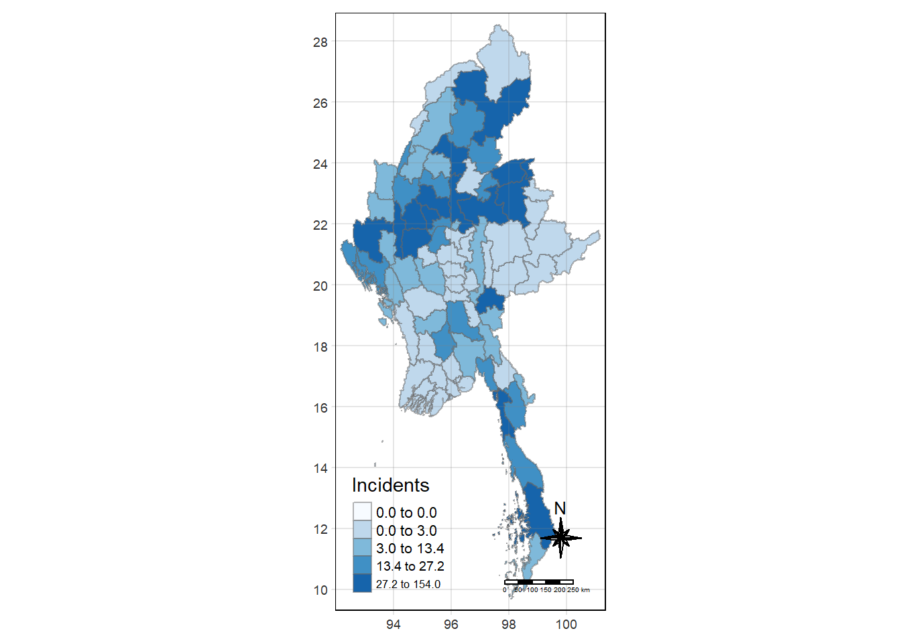
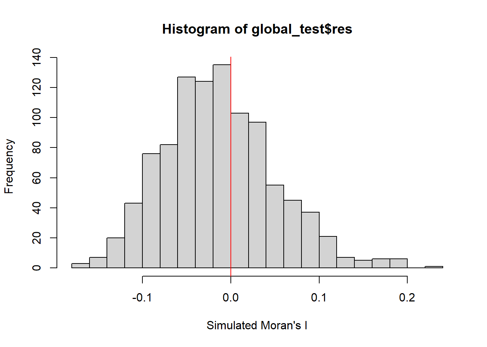
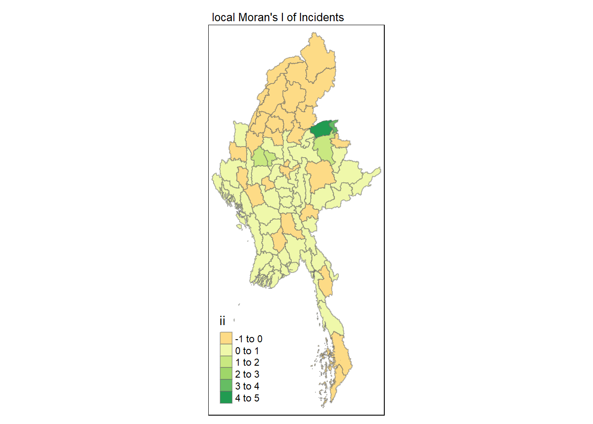
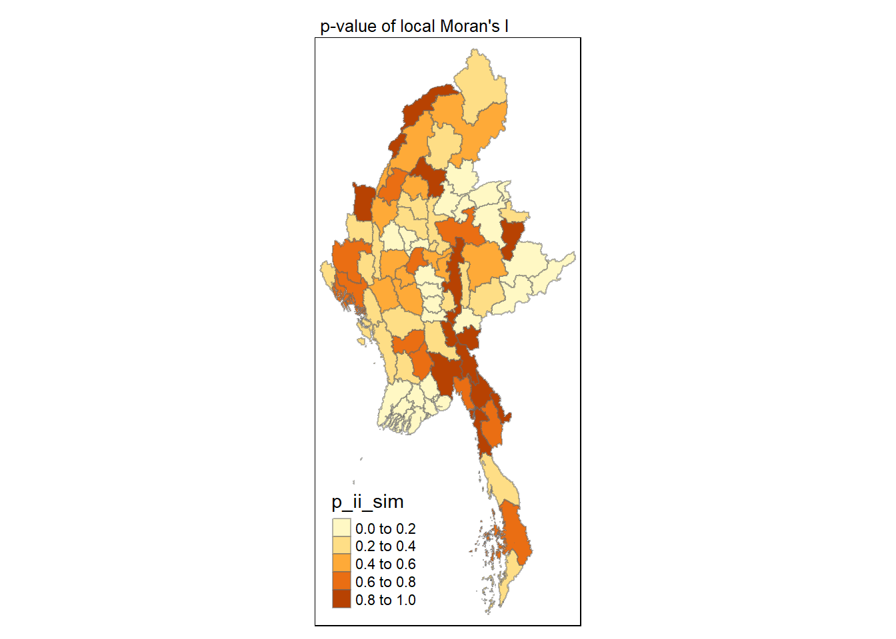
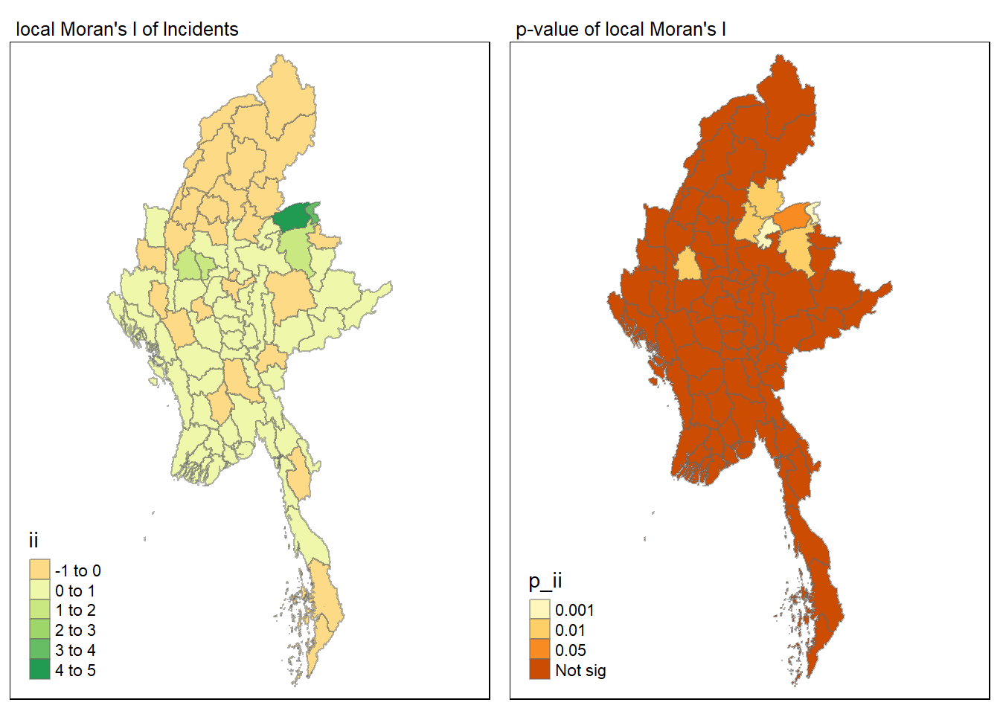
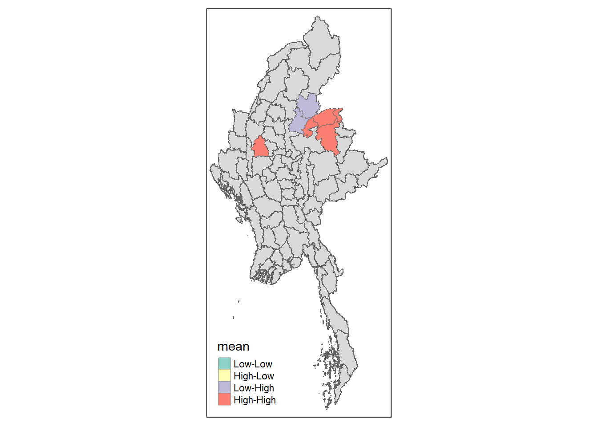
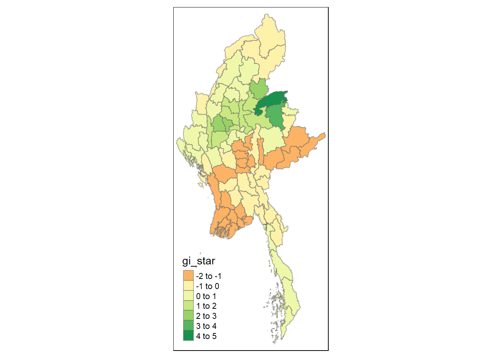
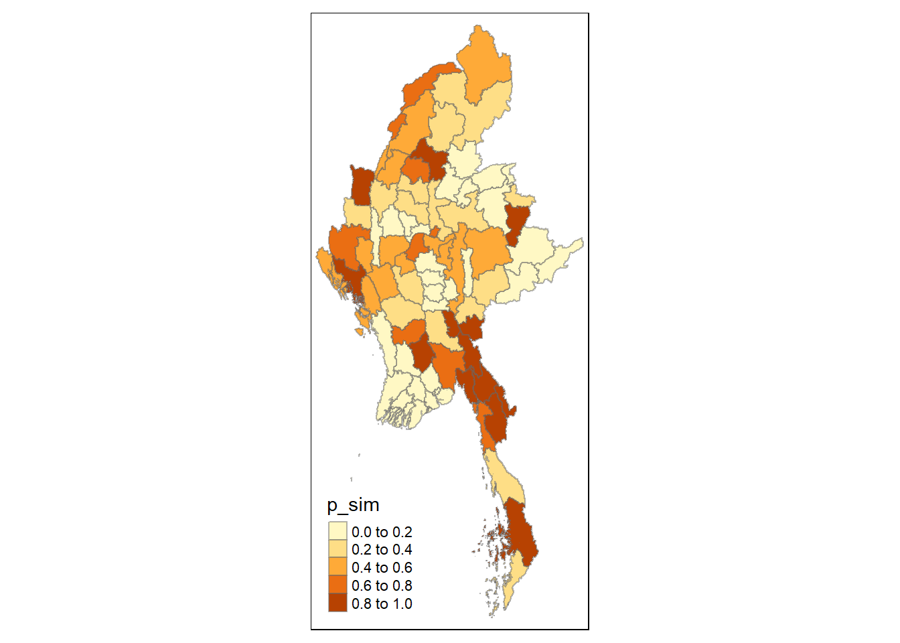
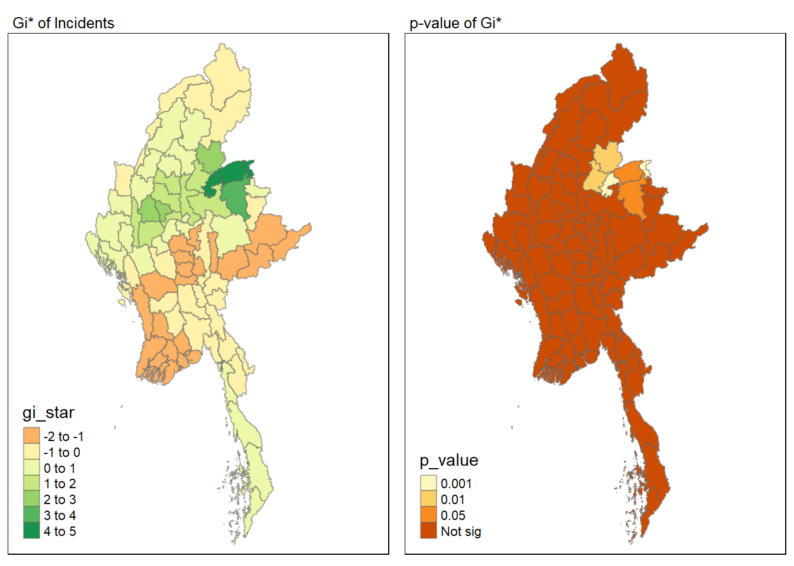
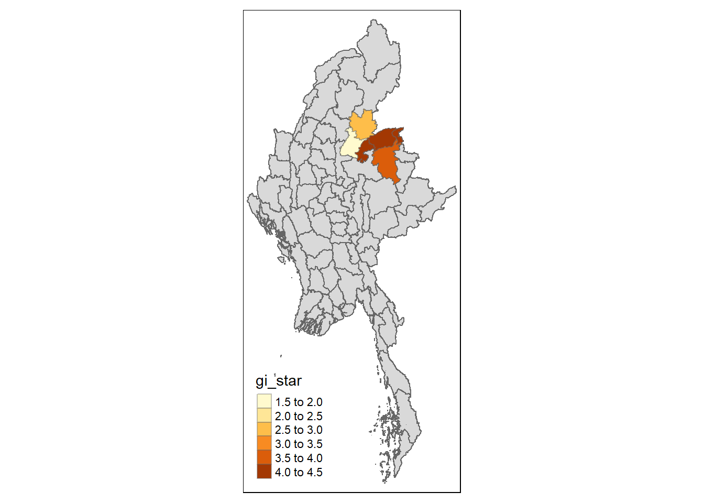

pacman::p_load(tidyverse, dplyr, tidyr,
sf, lubridate,plotly,
tmap, spdep, sfdep)Geospatial Analysis1 - Local Measures of Spatial Autocorrelation
Overview
In this page, I will be exploring the codes for the plots in our Geospatial Analysis module of our Shiny Application. Specifically, I will be plotting for Local Measures of Spatial Autocorrelation
Loading R packages and Data prep
Loading in the Dataset
ACLED_MMR <- read_csv("data/MMR.csv")Loading in the Shape files for our Admin2 District boundaries.
mmr_shp_mimu_2 <- st_read(dsn = "data/geospatial3",
layer = "mmr_polbnda_adm2_250k_mimu")Reading layer `mmr_polbnda_adm2_250k_mimu' from data source
`C:\imranmi\imran's data sc\R-ex\R-Ex6\data\geospatial3' using driver `ESRI Shapefile'
Simple feature collection with 80 features and 7 fields
Geometry type: MULTIPOLYGON
Dimension: XY
Bounding box: xmin: 92.1721 ymin: 9.696844 xmax: 101.17 ymax: 28.54554
Geodetic CRS: WGS 84Renaming admin1 and admin2 names
This is to enable our admin1 region names and admin2 district names in our data set to be in sync with our shape files.
ACLED_MMR_1 <- ACLED_MMR %>%
mutate(admin1 = case_when(
admin1 == "Bago-East" ~ "Bago (East)",
admin1 == "Bago-West" ~ "Bago (West)",
admin1 == "Shan-North" ~ "Shan (North)",
admin1 == "Shan-South" ~ "Shan (South)",
admin1 == "Shan-East" ~ "Shan (East)",
TRUE ~ as.character(admin1)
))ACLED_MMR_1 <- ACLED_MMR_1 %>%
mutate(admin2 = case_when(
admin2 == "Yangon-East" ~ "Yangon (East)",
admin2 == "Yangon-West" ~ "Yangon (West)",
admin2 == "Yangon-North" ~ "Yangon (North)",
admin2 == "Yangon-South" ~ "Yangon (South)",
admin2 == "Mong Pawk (Wa SAD)" ~ "Tachileik",
admin2 == "Nay Pyi Taw" ~ "Det Khi Na",
admin2 == "Yangon" ~ "Yangon (West)",
TRUE ~ as.character(admin2)
))Data Wrangle for quarterly data
For our LISA analysis, we will set up our data set for 2021-2023, and in quarterly periods.
ACLED_MMR_2 <- ACLED_MMR_1 %>%
filter(year >= 2021 & year <= 2023) %>%
mutate(event_date = dmy(event_date),
year_month = format(event_date, "%Y-%m"),
quarter = paste0(year, "Q", ceiling(month(event_date) / 3))) %>%
filter(event_type != "Strategic developments")Events2 <- ACLED_MMR_2 %>%
group_by(year, quarter, admin2, event_type) %>%
summarise(Incidents = n(),
Fatalities = sum(fatalities, na.rm = TRUE)) %>%
ungroup()Show the code
Events_2 <- read_csv("data/df_complete.csv")#checking the total no of Incidents and Fatalities from 2021-2023
total_incidents1 <- sum(Events2$Incidents)
total_incidents2 <- sum(Events_2$Incidents)
total_fatalities1 <- sum(Events2$Fatalities)
total_fatalities2 <- sum(Events_2$Fatalities)
total_incidents1 [1] 33955total_incidents2 [1] 33955total_fatalities1 [1] 46047total_fatalities2 [1] 46047Combining our attribute data to our map shape files.
Events_admin2 <- left_join(mmr_shp_mimu_2, Events_2,
by = c("DT" = "admin2"))Events_admin2 <- Events_admin2 %>%
select(-OBJECTID, -ST, -ST_PCODE,
-DT_PCODE, -DT_MMR, -PCode_V)class(Events_admin2)[1] "sf" "data.frame"Filtering the Event and Quarter
To test the output of the codes, I shall further filter the dataset to be event_type = Battles, and time period == 2023Q4.
Show the code
#Battles_2022 <- Events_admin2 %>%
#filter(year == 2023, event_type == "Battles")Battles_data <- Events_admin2 %>%
filter(quarter == "2023Q4", event_type == "Battles")Show the code
#Battles_data_whole <- Events_admin2 %>%
# filter(event_type == "Battles")Local Measures of Spatial Autocorrelation - sfdep methods
tmap_mode("plot")
tm_shape(Battles_data) +
tm_fill("Incidents",
style = "quantile",
palette = "Blues",
title = "Incidents") +
tm_borders(alpha = 0.5) +
tm_compass(type="8star", size = 2) +
tm_scale_bar() +
tm_grid(alpha =0.2)
Global Measures of Spatial Association
First we need to derive the contiguity weights.
Deriving contiguity weights: Queen’s method
In the code chunk below, queen method is used to derive the contiguity weights.
wm_q <- Battles_data %>%
mutate(nb = st_contiguity(geometry),
wt = st_weights(nb,
style = "W"),
.before = 1) Show the code
#wm_q_whole <- Battles_data_whole %>%
# mutate(nb = st_contiguity(geometry),
# wt = st_weights(nb,
# style = "W"),
# .before = 1) st_weights() provides 3 arguments, they are:
nb: A neighbor list object as created by
st_neighbours().style: Default “W” for row standardized weights. This value can also be “B”, “C”, “U”, “minmax”, and “S”.
B is the basic binary coding, W is row standardised (sums over all links to n), C is globally standardised (sums over all links to n), U is equal to C divided by the number of neighbours (sums over all links to unity), while S is the variance-stabilizing coding scheme proposed by Tiefelsdorf et al. 1999, p. 167-168 (sums over all links to n).
allow_zero: If TRUE, assigns zero as lagged value to zone without neighbors.
wm_qSimple feature collection with 80 features and 8 fields
Geometry type: MULTIPOLYGON
Dimension: XY
Bounding box: xmin: 92.1721 ymin: 9.696844 xmax: 101.17 ymax: 28.54554
Geodetic CRS: WGS 84
First 10 features:
nb
1 3, 5, 9, 10, 34, 78
2 4, 6
3 1, 4, 5, 6, 78, 79
4 2, 3, 5, 6
5 1, 3, 4, 34
6 2, 3, 4, 79
7 8, 10, 22, 72, 78, 79
8 7, 9, 10, 21, 22, 29, 73
9 1, 8, 10, 29, 34
10 1, 7, 8, 9, 78
wt
1 0.1666667, 0.1666667, 0.1666667, 0.1666667, 0.1666667, 0.1666667
2 0.5, 0.5
3 0.1666667, 0.1666667, 0.1666667, 0.1666667, 0.1666667, 0.1666667
4 0.25, 0.25, 0.25, 0.25
5 0.25, 0.25, 0.25, 0.25
6 0.25, 0.25, 0.25, 0.25
7 0.1666667, 0.1666667, 0.1666667, 0.1666667, 0.1666667, 0.1666667
8 0.1428571, 0.1428571, 0.1428571, 0.1428571, 0.1428571, 0.1428571, 0.1428571
9 0.2, 0.2, 0.2, 0.2, 0.2
10 0.2, 0.2, 0.2, 0.2, 0.2
DT quarter event_type year Incidents Fatalities
1 Hinthada 2023Q4 Battles 2023 2 2
2 Labutta 2023Q4 Battles 2023 0 0
3 Maubin 2023Q4 Battles 2023 0 0
4 Myaungmya 2023Q4 Battles 2023 0 0
5 Pathein 2023Q4 Battles 2023 0 0
6 Pyapon 2023Q4 Battles 2023 0 0
7 Bago 2023Q4 Battles 2023 13 50
8 Taungoo 2023Q4 Battles 2023 27 223
9 Pyay 2023Q4 Battles 2023 11 27
10 Thayarwady 2023Q4 Battles 2023 19 25
geometry
1 MULTIPOLYGON (((95.12637 18...
2 MULTIPOLYGON (((95.04462 15...
3 MULTIPOLYGON (((95.38231 17...
4 MULTIPOLYGON (((94.6942 16....
5 MULTIPOLYGON (((94.27572 15...
6 MULTIPOLYGON (((95.20798 15...
7 MULTIPOLYGON (((95.90674 18...
8 MULTIPOLYGON (((96.17964 19...
9 MULTIPOLYGON (((95.70458 19...
10 MULTIPOLYGON (((95.85173 18...Computing Global Moran’s I statistics
In the code chunk below, global_moran() function is used to compute the Moran’s I value. Different from spdep package, the output is a tibble data.frame.
moranI <- global_moran(wm_q$Incidents,
wm_q$nb,
wm_q$wt)
glimpse(moranI)List of 2
$ I: num 0.237
$ K: num 16.7Performing Global Moran’s I test
In general, Moran’s I test will be performed instead of just computing the Moran’s I statistics. With sfdep package, Moran’s I test can be performed by using global_moran_test() as shown in the code chunk below.
global_moran_test(wm_q$Incidents,
wm_q$nb,
wm_q$wt)
Moran I test under randomisation
data: x
weights: listw
Moran I statistic standard deviate = 3.713, p-value = 0.0001024
alternative hypothesis: greater
sample estimates:
Moran I statistic Expectation Variance
0.236932783 -0.012658228 0.004518538 Performing Global Moran’s I permutation test
In practice, monte carlo simulation should be used to perform the statistical test. For sfdep, it is supported by global_moran_perm()
It is a good practice to use set.seed() before performing simulation. This is to ensure that the computation is reproducible.
set.seed(1234)Next, global_moran_perm() is used to perform Monte Carlo simulation.
global_test <- global_moran_perm(wm_q$Incidents,
wm_q$nb,
wm_q$wt,
nsim = 999)
global_test
Monte-Carlo simulation of Moran I
data: x
weights: listw
number of simulations + 1: 1000
statistic = 0.23693, observed rank = 1000, p-value < 2.2e-16
alternative hypothesis: two.sidedThe statistical report above show that the p-value is smaller than alpha value of 0.05. Hence, we have enough statistical evidence to reject the null hypothesis that the spatial distribution of Incidents for event type==Battle, resemble random distribution (i.e. independent from spatial). Because the Moran’s I statistics is greater than 0. We can infer that the spatial distribution shows sign of clustering.
Visualising Monte Carlo Moran’s I
It is always a good practice for us the examine the simulated Moran’s I test statistics in greater detail. This can be achieved by plotting the distribution of the statistical values as a histogram by using the code chunk below.
In the code chunk below hist() and abline() of R Graphics are used.
mean(global_test$res[1:999])[1] -0.01332017var(global_test$res[1:999])[1] 0.004026595summary(global_test$res[1:999]) Min. 1st Qu. Median Mean 3rd Qu. Max.
-0.17783 -0.05633 -0.01746 -0.01332 0.02571 0.19633 hist(global_test$res,
freq=TRUE,
breaks=20,
xlab="Simulated Moran's I")
abline(v=0,
col="red") 
Computing local Moran’s I
Next, we compute Local Moran’s I of Incidents at admin 2 level (Districts) by using local_moran() of sfdep package.
lisa <- wm_q %>%
mutate(local_moran = local_moran(
Incidents, nb, wt, nsim = 99),
.before = 1) %>%
unnest(local_moran)lisaSimple feature collection with 80 features and 20 fields
Geometry type: MULTIPOLYGON
Dimension: XY
Bounding box: xmin: 92.1721 ymin: 9.696844 xmax: 101.17 ymax: 28.54554
Geodetic CRS: WGS 84
# A tibble: 80 × 21
ii eii var_ii z_ii p_ii p_ii_sim p_folded_sim skewness kurtosis
<dbl> <dbl> <dbl> <dbl> <dbl> <dbl> <dbl> <dbl> <dbl>
1 0.264 -1.63e-2 0.0553 1.19 0.233 0.24 0.12 -1.43 4.26
2 0.451 2.41e-2 0.221 0.908 0.364 0.08 0.06 -2.36 6.93
3 0.432 4.45e-4 0.0908 1.43 0.152 0.02 0.01 -1.48 2.61
4 0.451 1.53e-2 0.101 1.37 0.170 0.02 0.01 -1.48 2.60
5 0.429 -1.87e-3 0.137 1.16 0.245 0.06 0.03 -1.62 2.40
6 0.436 -1.11e-2 0.122 1.28 0.200 0.02 0.01 -1.46 2.17
7 0.0242 2.74e-3 0.00260 0.420 0.674 0.88 0.44 -1.17 1.13
8 -0.185 -2.51e-2 0.0244 -1.03 0.305 0.3 0.15 0.713 0.298
9 0.0509 -1.38e-3 0.00705 0.622 0.534 0.62 0.31 -1.13 1.86
10 -0.0307 9.01e-4 0.00567 -0.419 0.675 0.76 0.38 1.98 5.72
# ℹ 70 more rows
# ℹ 12 more variables: mean <fct>, median <fct>, pysal <fct>, nb <nb>,
# wt <list>, DT <chr>, quarter <chr>, event_type <chr>, year <dbl>,
# Incidents <dbl>, Fatalities <dbl>, geometry <MULTIPOLYGON [°]>The output of local_moran() is a sf data.frame containing the columns ii, eii, var_ii, z_ii, p_ii, p_ii_sim, and p_folded_sim.
ii: local moran statistic
eii: expectation of local moran statistic; for localmoran_permthe permutation sample means
var_ii: variance of local moran statistic; for localmoran_permthe permutation sample standard deviations
z_ii: standard deviate of local moran statistic; for localmoran_perm based on permutation sample means and standard deviations
p_ii: p-value of local moran statistic using pnorm(); for localmoran_perm using standard deviation based on permutation sample means and standard deviations p_ii_sim: For
localmoran_perm(),rank()andpunif()of observed statistic rank for [0, 1] p-values usingalternative=-p_folded_sim: the simulation folded [0, 0.5] range ranked p-valueskewness: For
localmoran_perm, the output of e1071::skewness() for the permutation samples underlying the standard deviateskurtosis: For
localmoran_perm, the output of e1071::kurtosis() for the permutation samples underlying the standard deviates.
Visualising local Moran’s I
In this code chunk below, tmap functions are used to prepare a choropleth map by using value in the ii field.
tmap_mode("plot")
tm_shape(lisa) +
tm_fill("ii") +
tm_borders(alpha = 0.5) +
tm_view(set.zoom.limits = c(6,8)) +
tm_layout(main.title = "local Moran's I of Incidents",
main.title.size = 0.8)
Visualising p-value of local Moran’s I
In the code chunk below, tmap functions are used prepare a choropleth map by using value in the p_ii_sim field.
tmap_mode("plot")
tm_shape(lisa) +
tm_fill("p_ii_sim") +
tm_borders(alpha = 0.5) +
tm_layout(main.title = "p-value of local Moran's I",
main.title.size = 0.8)
Visuaising local Moran’s I and p-value
For effective comparison, it will be better for us to plot both maps next to each other as shown below.
tmap_mode("plot")
map1 <- tm_shape(lisa) +
tm_fill("ii") +
tm_borders(alpha = 0.5) +
tm_view(set.zoom.limits = c(6,8)) +
tm_layout(main.title = "local Moran's I of Incidents",
main.title.size = 0.8)
map2 <- tm_shape(lisa) +
tm_fill("p_ii",
breaks = c(0, 0.001, 0.01, 0.05, 1),
labels = c("0.001", "0.01", "0.05", "Not sig")) +
tm_borders(alpha = 0.5) +
tm_layout(main.title = "p-value of local Moran's I",
main.title.size = 0.8)
tmap_arrange(map1, map2, ncol = 2)
Visualising LISA map
LISA map is a categorical map showing outliers and clusters. There are two types of outliers namely: High-Low and Low-High outliers. Likewise, there are two type of clusters namely: High-High and Low-Low clusters. LISA map is an interpreted map by combining local Moran’s I of geographical areas and their respective p-values.
In lisa sf data.frame, we can find three fields contain the LISA categories. They are mean, median and pysal. In general, classification in mean will be used as shown in the code chunk below.
lisa_sig <- lisa %>%
filter(p_ii < 0.05)
tmap_mode("plot")
tm_shape(lisa) +
tm_polygons() +
tm_borders(alpha = 0.5) +
tm_shape(lisa_sig) +
tm_fill("mean") +
tm_borders(alpha = 0.4)
Hot Spot and Cold Spot Area Analysis (HCSA)
HCSA uses spatial weights to identify locations of statistically significant hot spots and cold spots in an spatially weighted attribute that are in proximity to one another based on a calculated distance. The analysis groups features when similar high (hot) or low (cold) values are found in a cluster. The polygon features usually represent administration boundaries or a custom grid structure.
Computing local Gi* statistics
Similarly, we will need to first derive a spatial weight matrix before we can compute local Gi* statistics. Code chunk below will be used to derive a spatial weight matrix by using sfdep functions and tidyverse approach.
wm_idw <- Battles_data %>%
mutate(nb = st_contiguity(geometry),
wts = st_inverse_distance(nb, geometry,
scale = 1,
alpha = 1),
.before = 1)Gi* and local Gi* are distance-based spatial statistics. Hence, distance methods instead of contiguity methods are used to derive the spatial weight matrix.
Next, we will compute the local Gi* by using the code below.
HCSA <- wm_idw %>%
mutate(local_Gi = local_gstar_perm(
Incidents, nb, wt, nsim = 99),
.before = 1) %>%
unnest(local_Gi)
HCSASimple feature collection with 80 features and 18 fields
Geometry type: MULTIPOLYGON
Dimension: XY
Bounding box: xmin: 92.1721 ymin: 9.696844 xmax: 101.17 ymax: 28.54554
Geodetic CRS: WGS 84
# A tibble: 80 × 19
gi_star cluster e_gi var_gi std_dev p_value p_sim p_folded_sim skewness
<dbl> <fct> <dbl> <dbl> <dbl> <dbl> <dbl> <dbl> <dbl>
1 -1.29 Low 0.0118 0.0000519 -1.11 0.266 0.18 0.09 1.18
2 -1.18 Low 0.00688 0.0000358 -1.15 0.250 0.08 0.01 1.07
3 -1.78 Low 0.0103 0.0000410 -1.54 0.124 0.02 0.01 1.76
4 -1.54 Low 0.0104 0.0000558 -1.40 0.163 0.02 0.01 1.74
5 -1.48 Low 0.0101 0.0000580 -1.27 0.206 0.02 0.01 2.32
6 -1.50 Low 0.00966 0.0000426 -1.43 0.152 0.04 0.01 1.19
7 -0.537 Low 0.0129 0.0000549 -0.547 0.585 0.68 0.34 1.14
8 -0.818 High 0.0138 0.0000428 -0.992 0.321 0.28 0.14 1.13
9 -0.618 Low 0.0110 0.0000464 -0.452 0.651 0.66 0.33 1.59
10 -0.401 High 0.0122 0.0000402 -0.424 0.671 0.82 0.41 1.42
# ℹ 70 more rows
# ℹ 10 more variables: kurtosis <dbl>, nb <nb>, wts <list>, DT <chr>,
# quarter <chr>, event_type <chr>, year <dbl>, Incidents <dbl>,
# Fatalities <dbl>, geometry <MULTIPOLYGON [°]>Visualising Gi*
tmap_mode("plot")
tm_shape(HCSA) +
tm_fill("gi_star") +
tm_borders(alpha = 0.5) +
tm_view(set.zoom.limits = c(6,8))
Visualising p-value of HCSA
tmap_mode("plot")
tm_shape(HCSA) +
tm_fill("p_sim") +
tm_borders(alpha = 0.5)
Visualising local HCSA
For effective comparison, we can plot both maps next to each other as shown below.
tmap_mode("plot")
map1 <- tm_shape(HCSA) +
tm_fill("gi_star") +
tm_borders(alpha = 0.5) +
tm_view(set.zoom.limits = c(6,8)) +
tm_layout(main.title = "Gi* of Incidents",
main.title.size = 0.8)
map2 <- tm_shape(HCSA) +
tm_fill("p_value",
breaks = c(0, 0.001, 0.01, 0.05, 1),
labels = c("0.001", "0.01", "0.05", "Not sig")) +
tm_borders(alpha = 0.5) +
tm_layout(main.title = "p-value of Gi*",
main.title.size = 0.8)
tmap_arrange(map1, map2, ncol = 2)
Visualising hot spot and cold spot areas
Finally, we plot the significant (i.e. p-values less than 0.05) hot spot and cold spot areas by using appropriate tmap functions as shown below.
HCSA_sig <- HCSA %>%
filter(p_value < 0.05)
tmap_mode("plot")
tm_shape(HCSA) +
tm_polygons() +
tm_borders(alpha = 0.5) +
tm_shape(HCSA_sig) +
tm_fill("gi_star") +
tm_borders(alpha = 0.4)
Figure above reveals that there are several hot spot areas and these areas also coincide with the High-High cluster identified by using local Moran’s I method in the earlier sub-section.
References
Main reference: Kam, T.S. (2024). Global and Local Measures of Spatial Autocorrelation - sfdep methods